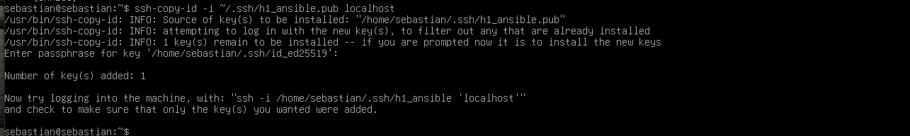

ssh-keygen-komentoa ja julkisen avaimen siirtämiseen ssh-copy-id-komentoa.Oma huomio: Aihe oli minulle hyödyllinen, koska pääsin kokeilemaan samoja komentoja käytännössä tässä tehtävässä. Huomasin, että avainkirjautuminen helpottaa kirjautumista huomattavasti. Erityisesti siitä on hyötyä silloin, kun yhteyksiä käytetään automaation kanssa.
ping-moduulilla ja miten palvelimella voidaan suorittaa komentoja.Oma huomio: En ollut aikaisemmin käyttänyt Ansiblea, joten artikkeli auttoi ymmärtämään sen perusidean. Tehtävää tehdessäni kokeilin yhteyden testaamista ja Hello World -tekstin tulostamista. Oli mukava huomata, että sain komennot toimimaan ilman, että minun tarvitsi kirjautua palvelimelle erikseen tekemään niitä.
Käytin tehtävässä samaa Debian 13 -virtuaalikonetta, jonka olin asentanut jo aikaisemmassa H0-tehtävässä. Virtuaalikone oli valmiina, joten käyttöjärjestelmää ei tarvinnut asentaa uudelleen.
Lisätietoja asennuksesta löytyy H0-raportistani.
Aloitin päivittämällä Debianin pakettiluettelot komennolla:
sudo apt update
Tämän jälkeen tarkistin SSH-palvelimen asennuksen komennolla:
sudo apt install openssh-serverSSH-palvelin oli jo valmiiksi asennettuna, joten uutta asennusta ei tarvinnut tehdä.

Tarkistin vielä SSH-palvelimen tilan komennolla:
sudo systemctl status sshPalvelu oli käynnissä ja valmis vastaanottamaan yhteyksiä.

Testasin kirjautumista paikalliseen koneeseen komennolla:
ssh localhostKirjautuminen onnistui.

Seuraavaksi loin uuden SSH-avainparin komennolla:
ssh-keygen -t ed25519 -f ~/.ssh/h1_ansibleJätin avaimelle salasanan asettamatta, jotta sitä voidaan käyttää automaattisessa kirjautumisessa.

Kopioin julkisen avaimen paikalliselle palvelimelle komennolla:
ssh-copy-id -i ~/.ssh/h1_ansible.pub localhost
Lopuksi testasin kirjautumista uudella avaimella:
ssh -i ~/.ssh/h1_ansible -o PasswordAuthentication=no localhostKirjautuminen onnistui ilman käyttäjän salasanan tai avaimen salasanan kysymistä.

Asensin Ansiblen Debianiin komennolla:
sudo apt install ansibleTarkistin asennuksen komennolla:
ansible --version
Loin hosts.ini-inventariotiedoston, johon määrittelin paikallisen koneen ja SSH-avaimen käytön.
Tiedoston sisältö:
[local]
localhost ansible_connection=ssh ansible_user=sebastian ansible_ssh_private_key_file=/home/sebastian/.ssh/h1_ansibleTestasin Ansible-yhteyden komennolla:
ansible -i hosts.ini local -m pingYhteys toimi ja Ansible palautti vastauksen pong.

Lopuksi suoritin Hello World -komennon:
ansible -i hosts.ini local -m command -a "echo Hello World"Komento onnistui ja tulosti tekstin Hello World.

Tehtävän aikana opin käyttämään SSH-avaimia ja automatisoimaan kirjautumisen. Lisäksi tutustuin Ansibleen ja kokeilin komentojen suorittamista sen avulla. Sain käytännön vaiheet toimimaan, ja samalla ymmärsin paremmin, miten palvelimen hallintaa voidaan automatisoida.
Lähteet luettu 3.11.2026.